Case study · YuCollect · Yubi · Two-sided marketplace and infrastructure
Collections, rebuiltas infrastructure.
India runs on credit, but getting it back was offline, opaque, and scattered across thousands of collection agencies no lender could see, rank, or trust. YuCollect turned that into a single transparent marketplace, then an operating system, then an intelligence layer. This is the full build, from an MVP that just had to prove two sides would show up, to infrastructure spanning 19,000+ pincodes and cutting collection costs by more than half.
One of the largest, least-designed corners of Indian finance, rebuilt as a product.
Every rupee a bank lends is a rupee it eventually has to collect. In India that recovery happens through a sprawling, offline network of collection agencies, field agents, and tele-callers that no lender can fully see and no regulator can easily audit. YuCollect set out to turn that network into infrastructure: one place where lenders discover and rank compliant agencies, allocate accounts, and watch performance down to the agent, and where agencies get the tools to be discovered, stay compliant, and collect digitally.
I led design across the arc. The hard part was never a screen. It was sequencing an enormous, multi-sided system into versions that each earned the next: an MVP that only had to prove both sides would show up, a Version 1 that made the marketplace trustworthy enough to run real money through, and a Version 2 that made it intelligent. This is that story, in order.
₹1.4L CrDebt volume on the parent marketplace
19,000+Pincodes with agency coverage
57%Reduction in collection cost
5Stakeholder types on one platform
01 · Background
Collections was the last part of lending nobody had productised.
India's credit market exploded over the last decade, but the machinery for recovering that credit stayed stuck in the analog era. When a loan goes overdue, a lender hands the account to a debt collection agency, of which there are thousands, most small, regional, and unrated. The agency hires field agents and tele-callers, dispatches them, and reports back on paper or over the phone. The lender has almost no live view of who is calling their customer, what is being said, whether the agent is DRA certified, or whether a complaint is brewing that could turn into a regulatory problem.
This opacity is expensive on every axis. Lenders overpay because they cannot compare agencies on price or performance. Recovery suffers because allocations go to whoever is familiar, not whoever is best in that pincode. And compliance risk sits unmanaged, in an industry the regulator watches closely because it touches vulnerable borrowers. YuCollect, built inside Yubi, the debt marketplace founded in 2020 by Gaurav Kumar and backed by Peak XV, Lightspeed, and Dragoneer, was the attempt to give this whole layer a nervous system.
Lending had been digitised end to end. Then it reached collections, and fell off a cliff back into paper.
02 · The problem
Not one problem. A different broken thing for every party.
The reason collections had resisted productisation is that it is not a single workflow. It is a marketplace with five parties who each experience a different failure, and any product has to fix all of them at once or none of them adopt it. That is the core design complexity of YuCollect, and it shaped every version decision that followed.
PartyWhat was broken for themWhat they needed
Lenders / allocatorsNo way to find, rank, or trust agencies; blind after allocationDiscovery, comparison, live performance, audit
Collection agenciesNew business is relationship-gated; compliance is manualTo be discovered on merit, and tooling to run
Field / tele agentsUntracked work, manual dispatch, no certification pathClear allocations, digital workflow, DRA training
BorrowersInconsistent, sometimes aggressive, contactFair, traceable, multi-channel outreach
RegulatorsNo auditable trail across a sensitive industryTransparency and enforceable compliance
A two-sided marketplace already has a cold-start problem: neither side joins until the other is there. YuCollect had a five-sided version of it, wrapped in regulation, on top of an industry that had never used software. That is why it could not launch as the finished eight-module platform it is today. It had to be sequenced.
03 · Users and cohorts
The same platform, read completely differently by each person on it.
Designing for a marketplace means designing for cohorts whose incentives point in different directions. A large private bank and a two-person regional agency both live on YuCollect, but almost nothing about their needs, literacy, or trust threshold is the same. These are the cohorts that drove the interface decisions.
Supply sideLarge national agenciesMulti-city, multi-lender, hundreds of agents. Care about volume of allocations and channel-wise dashboards. High software literacy, so the ask was depth and bulk operations.
Supply sideSmall regional agenciesA handful of agents in a few pincodes. Their entire growth used to depend on who they knew. Low software literacy, so onboarding and discovery had to be almost self-explanatory.
Demand sideBanks and large NBFCsRisk and compliance teams with zero tolerance for a data leak or a regulatory miss. Needed governance, audit trails, and price discovery before they would allocate a single account.
Demand sideFintech lendersFast, API-first, high-volume small-ticket books. Wanted bulk allocation, propensity scoring, and digital-first recovery over feet on the street.
FieldAgents and tele-callersThe people who actually make the calls and knock on doors. Needed clear allocations, a DRA certification path, and a workflow that worked on a low-end phone.
OversightBorrowers and regulatorsNever log in, but every design decision answers to them. Fair contact for the borrower, an auditable trail for the regulator. The platform's licence to operate depends on both.
04 · The system journey
Seven roles, one lifecycle. Work flows down. Truth flows up.
Put every role on one map and the system's shape appears. Allocation flows downward, from the lender's search to the owner's acceptance to the manager's plan to the agents' calls and visits. And the truth flows back up the same rails: a borrower's payment rolls up through the manager's reconciliation, the owner's compliance submissions, the reviewers' approvals, into the score the lender reads before allocating again. The flywheel at the top is the whole business: a good score earns the next allocation.
The full system on one map. Scroll sideways to walk the lifecycle: allocation moves down the left spine, results climb the right one, and the orange loop at the top is the business model.
05 · Empathy and pain points
The same map, felt from inside each seat.
A journey map shows what each role does. It does not show what the work feels like, and in collections the feelings are the product constraints: fear of audits, fear of harassment accusations, the fatigue of dialing blind. These maps, drawn from the interviews behind the compliance and CRM work, are what each role thinks, feels, does, and suffers, and the last row of each is what the design answered with.
Agency owner
Small regional agency · supply side
Thinks"Growth depends on who I know, not how well I collect."
FeelsInvisible to large lenders. Anxious that a penalty or a held allocation will arrive without warning.
DoesRuns the firm on phone calls, notebooks, and WhatsApp. Chases agents for updates and lenders for dues.
PainsNo way to be discovered on merit. Never knows what document is due, when, or in what format. Penalties land as surprises.
DesignDiscovery Hub ranking, the reward-built profile card, Box Files with action flags, a score that turns performance into business.
Lender · allocator
Bank / NBFC · demand side
Thinks"I cannot see who is actually good in this pincode."
FeelsBlind after allocation. Nervous that a data leak or a rogue agent becomes tomorrow's headline.
DoesAllocates to familiar agencies by habit. Reconciles performance from twenty vendors' spreadsheets.
PainsNo comparison on price or performance. Borrower data is too sensitive to hand to a marketplace. No live view of recovery.
DesignPincode-level ranking with price discovery, the zero-data-sharing allocation engine, channel-wise dashboards down to the agent.
Agency manager
Manager view · operations
Thinks"Which accounts should move from calls to the field today?"
FeelsAlways a day behind, making decisions on stale, self-reported numbers.
DoesAssigns agents from memory, chases updates over WhatsApp, rebuilds the same Excel every Monday.
PainsNo live view of the campaign. Reassignment is guesswork. Updates arrive as hearsay, hours or days late.
DesignThe manager view: live campaign monitoring, channel planning, one-tap agent and channel reassignment logged to the timeline.
Collection agent
Tele · agent app / CRM
Thinks"Who do I call next, and what happened before with this account?"
FeelsThe pressure of a monthly target, and the fatigue of dialing blind into conversations that start with an accusation.
DoesDials down a list, scribbles outcomes on paper, retells the whole story every time a case escalates.
PainsNo context mid-call. Outcomes written as free text disappear. Good work is invisible, so credit never lands.
DesignA pre-triaged worklist, the one-screen borrower workspace, and coded dispositions that make every call count somewhere visible.
Field agent
Collect app · on the ground
Thinks"Long route today. Will anyone be home, and can I prove I was there?"
FeelsAlone and exposed at the doorstep, where any dispute becomes their word against the borrower's.
DoesTravels pincode to pincode, collects payments, photographs receipts, reports everything at day's end.
PainsUnplanned routes burn hours. Visits get disputed without proof. Collections reconcile late, so trust in them is low.
DesignPlanned routes in the collect app, photo and location proof captured at the door, and collections that sync to the record instantly.
Compliance manager
Lender side · CM and PM
Thinks"Which of my twenty agencies fails the next audit?"
FeelsPersonally exposed: accountable to auditors for documents that live in other people's inboxes.
DoesChases documents over email and WhatsApp, maintains master spreadsheets, spot-checks whatever there is time for.
PainsNo single source of truth. Feedback meant for reviewers leaks to agencies. Submissions arrive late or in the wrong format.
DesignOne review queue with statuses, the two-tier CM-then-PM chain with a private thread, and a score that ranks the portfolio at a glance.
Borrower
The customer at the edge
Thinks"Who is this calling me, and can I trust this payment link?"
FeelsHarassed by repeated unknown numbers, and ashamed. Wants to settle the debt with dignity intact.
DoesIgnores calls it cannot place. Pays when the contact is legitimate, clear, and consistent about what was agreed.
PainsAggressive or repeated contact. Suspicious links. No record of promises, so every call restarts from zero.
DesignTraceable, recorded contact on legitimate channels, payment links tied to the account, and a timeline that remembers what was agreed.
06 · MVP · The marketplace
Prove that both sides will show up. Nothing else.
The MVP had exactly one job: prove that lenders would look for agencies here, and agencies would want to be found here. Everything else was deliberately cut. The bet was the Discovery Hub: a pincode-level directory where a lender could search 19,000+ pincodes and see agencies ranked, rated, and reviewed on real performance rather than reputation, then allocate accounts in bulk.
The single hardest design constraint showed up immediately. Lenders will not upload a portfolio of overdue customers, some of the most sensitive data a bank holds, into a marketplace where agencies might see it. So the MVP was built around a zero-data-sharing allocation engine: agencies are matched and ranked, and accounts are allocated, without exposing borrower data across the marketplace. Solving that trust problem first is what made everything after it possible.
Design-wise, the MVP lived or died on two moments: a lender's first search feeling instantly more legible than the spreadsheets and phone calls it replaced, and an agency's onboarding being simple enough that a small regional shop could get listed without hand-holding. Discovery had to look less like a database and more like a decision. Get an agency ranked, priced, and allocated in one sitting, and both sides had a reason to come back.
07 · Onboarding by visual reward
The form asks for data. The screen gives back an identity.
The most dangerous moment in the whole marketplace was a registration form. Supply-side growth depended on thousands of small agencies, many of which had never used business software, filling out company details, owner details, coverage, languages, and compliance documents. A plain form here is where two-sided platforms quietly die. I had seen this exact failure before, at Khatabook, where a KYU form converted under 2% until we replaced the form-feeling with a visual reward, and 17,000 merchants signed up in two weeks. YuCollect's onboarding was designed on the same theory, rebuilt for a B2B audience.
The theory: every unit of effort a user gives must return a visible unit of identity. People abandon forms because effort flows one way, field after field with nothing coming back. So in YuCollect's signup, nothing is asked without something appearing. Type your company name, and your agency's office materialises beside the form with your name painted on the signboard. Declare yourself the owner, and the owner steps out in front of the building while a business card forms with your name on it. Add your pincode, and the street sign plants your agency in its city. By the time the form is done, you have not filled in a database. You have built your firm's presence, and it is standing there looking back at you.
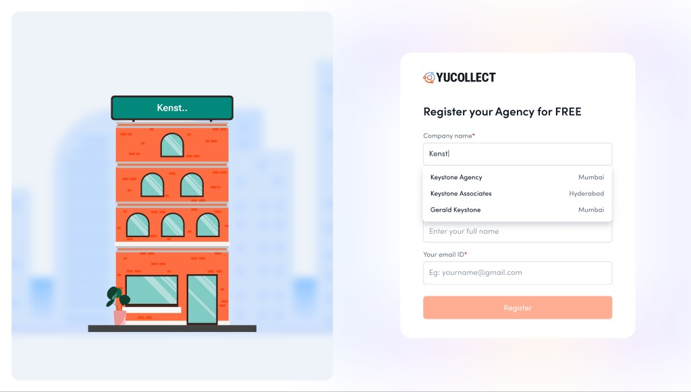
Type your name, and your building rises, signboard first.Declare yourself the owner, and you appear at the door, card in hand.
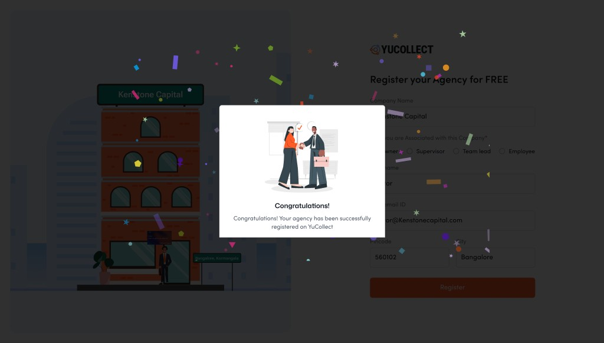
Register, and the finished scene celebrates with you.
The mechanic runs on four principles, each doing a specific job. Together they turn the highest-drop-off moment of the funnel into the moment the product first proves its promise.
01Reflection, not fields · the instant feedback loopEvery keystroke changes the scene, so the gap between effort and reward is close to zero. That is a live operant loop: input, visible consequence, next input. The form stops being a corridor you walk down blind and becomes a world that responds.
02Identity endowment · it is your building nowThe endowment and IKEA effects say people overvalue what they have made. Once your name is on the signboard and your figure stands at the door, abandoning the flow means abandoning something that is already yours. Loss aversion starts working for completion instead of against it.
03Progress as construction · the unfinished sceneGoal-gradient and the Zeigarnik effect: an incomplete picture nags to be completed, and people accelerate as the end nears. A half-built profile card with empty chips is a far stronger pull than a progress bar, because what is missing is visible, and it is yours.
04The reward previews the promiseThe payoff is not confetti. It is your finished profile card orbited by the logos of India's biggest lenders, which is literally the product's value proposition, being discovered, shown before a single allocation exists. The reward and the reason you came are the same image.
The same theory then carries into the deeper onboarding, where the stakes rise from a signup to compliance documents. There the artifact under construction is the marketplace profile card itself: every section completed adds a real, lender-facing attribute to the card beside the form, cities, agents, years, languages. You are not doing paperwork. You are watching the thing lenders will judge you by get stronger with every field.
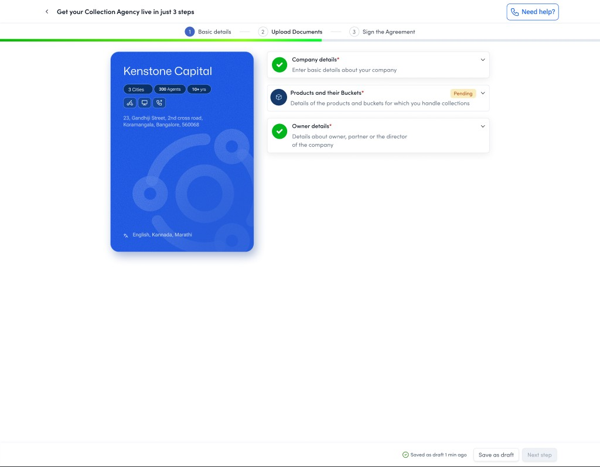
Deeper onboarding, same theory: the profile card builds live, one completed section at a time.
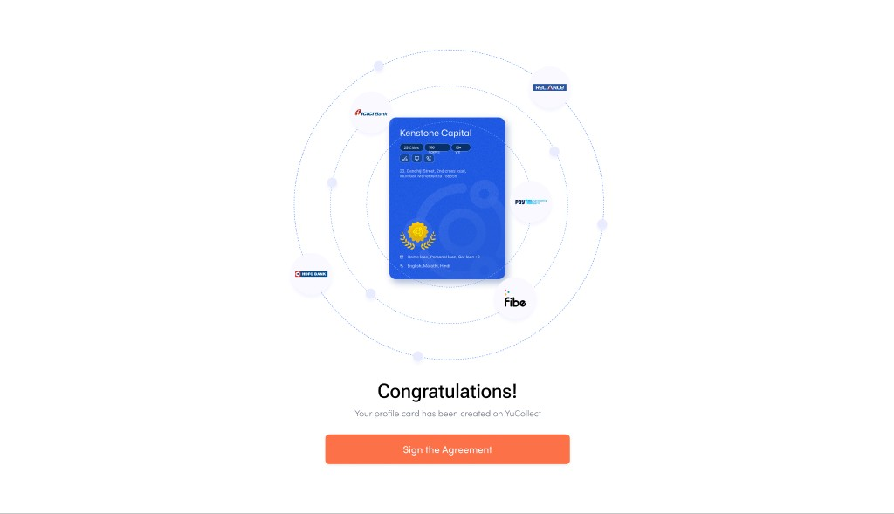
The payoff frame: your card at the centre, lenders in orbit. The reward is the promise, made visible.
HypothesisIf weThen we expect
H1 · CompletionReturn a visible reward for every fieldSignup completion rises, because effort has instant visible return
H2 · Data qualityMake each field a visible, lender-facing card attributeRicher, more accurate profiles, because the card is being judged, not filed
H3 · Sensitive stepsBuild identity ownership before the document askLower drop-off at uploads, because leaving now means losing something owned
H4 · ActivationPreview discovery as the final rewardFaster progression to a first allocation, because the goal was seen, not told
Screens from the YuCollect onboarding revamp design files. Hypotheses are stated as designed, with the Khatabook reward programme as the precedent evidence.
08 · Version 1 · The operating system
A marketplace people trust with real money, and tools to actually run.
The MVP proved liquidity. Version 1 had to make the marketplace safe to run at scale, because a bank will not move a real portfolio through a platform it cannot govern, and an agency cannot grow on allocations alone if it has no way to operate them. So V1 added the two things a regulated marketplace needs most, trust and tooling, through three product lines.
01Compliance Plus · trust, made auditableDigitised agency compliance, a compliance control dashboard, per-agency compliance ratings, document approval with full audit trails, and customer-complaint management. This is what let a bank's risk team say yes. It turns compliance from a quarterly paper scramble into a live, visible state, which in a regulated industry is the whole ballgame.
02Portfolio Master · performance, made visibleLine-of-business and channel-wise dashboards, allocation upload, document trails, and hardened data security. Lenders stopped being blind after allocation: they could now watch recovery by agency, by channel, down to the agent. The design job was turning a firehose of collections data into a few decisions a portfolio manager makes on a Monday morning.
03Agent Plus · supply, made realIn-platform agent hiring with DRA training built in. The bottleneck on the supply side was never desire, it was certified people. Bringing hiring and the regulatory training path into the product meant an agency could scale capacity to meet the allocations the marketplace was now sending it, without leaving the platform.
V1 is where the product stopped being a directory and became an operating system. The design challenge shifted from persuasion to density: how to give a large agency the depth and bulk controls it needs, and a small one a path through the same screens without drowning. Progressive disclosure, role-aware defaults, and one consistent system across every module were what held it together.
09 · Deep dive · Compliance Plus
A paper and WhatsApp ritual, turned into one workflow with a score attached.
One module from Version 1 deserves the full story, because it shows how the platform actually got built: small team, hard constraint, research-led. Compliance Plus was designed by a team of one product manager, one designer, and three engineers, on a three-week clock, with a launch lender already waiting. Lenders had started asking for exactly this during sales demos, so the feature was not just a usability fix. It was the thing standing between the platform and its next signed bank.
The ritual it replaced ran on Excel, email, and WhatsApp. Every lender requires its agencies to keep dozens of compliance documents current, police verifications, DRA certifications, service agreements, purging letters, and the chain of custody for those documents was three people forwarding files at each other with no shared state.
SubmitsThe agency ownerRuns the agency, submits the documents. Did not know what was due, when it was due, or in what format. Found out something was missing only when a penalty arrived or an allocation was held back.
First reviewThe collections managerThe lender's first line of verification. Tracked twenty-plus agencies across Excel sheets, email threads, and WhatsApp forwards. Their whole job was reconciling versions of the truth that never matched.
Final reviewThe process managerThe final verification before the lender's auditors. Tracked multiple collections managers across the same scattered channels, and needed to give feedback to CMs that agencies must never see.
Three weeks did not allow for guesswork, so the design ran on four research insights from interviews with lenders and agency owners, and each one became a specific product decision.
What research foundWhy it mattersWhat it became
Agencies think in foldersOwners described their physical filing system, labelled box files per guidelineThe UI is literally Box Files: documents grouped the way agencies already think
Document load is unevenSome agencies submit 8 documents a cycle, others 40+. A flat list crushes the large onesGrouped, status-tagged boxes that scale from 8 documents to 40 without changing shape
CMs and PMs need a private channelPM feedback to a CM must stay invisible to the agency, as the offline ritual already workedA two-tier review chain with an internal thread the agency never sees
Agencies needed motivationReminders alone rarely change submission behaviourA compliance score, a single number that moves with every approved or delayed document
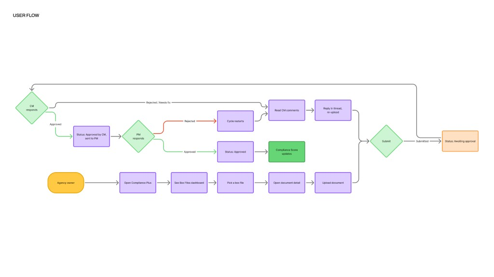
One loop, three roles: submit, first review, final review. A rejection restarts the cycle in a thread instead of a lost WhatsApp forward, and an approval moves the score.
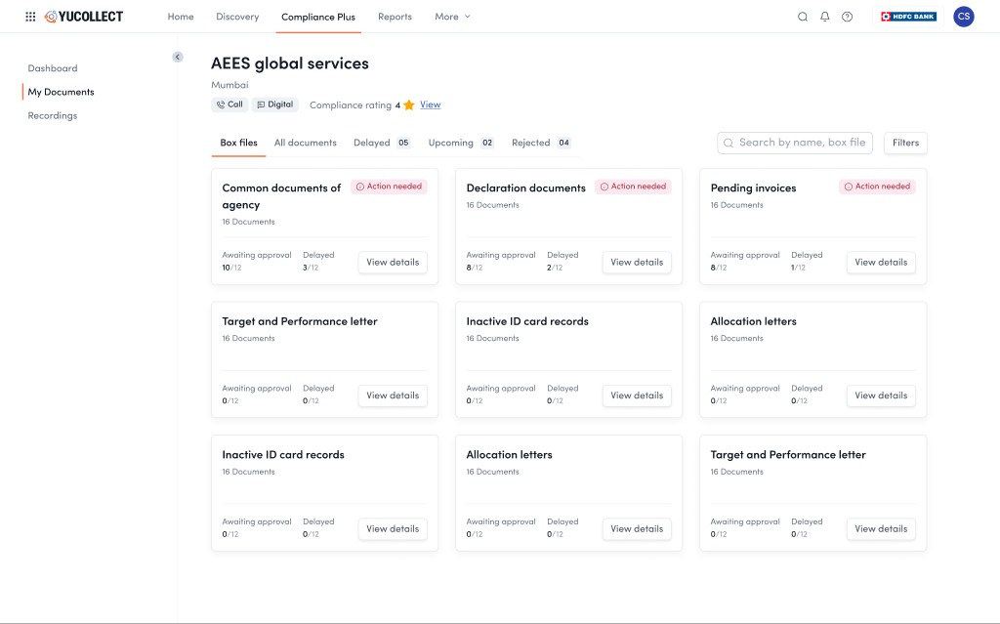
The agency sees Box Files, its own mental model, with action flags doing the chasing.
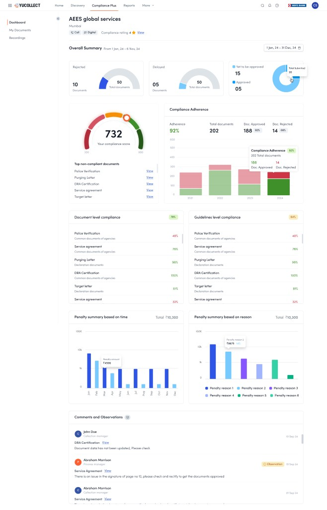
The agency's score, 732, with exactly which documents are dragging it down, and what each delay costs in penalties.
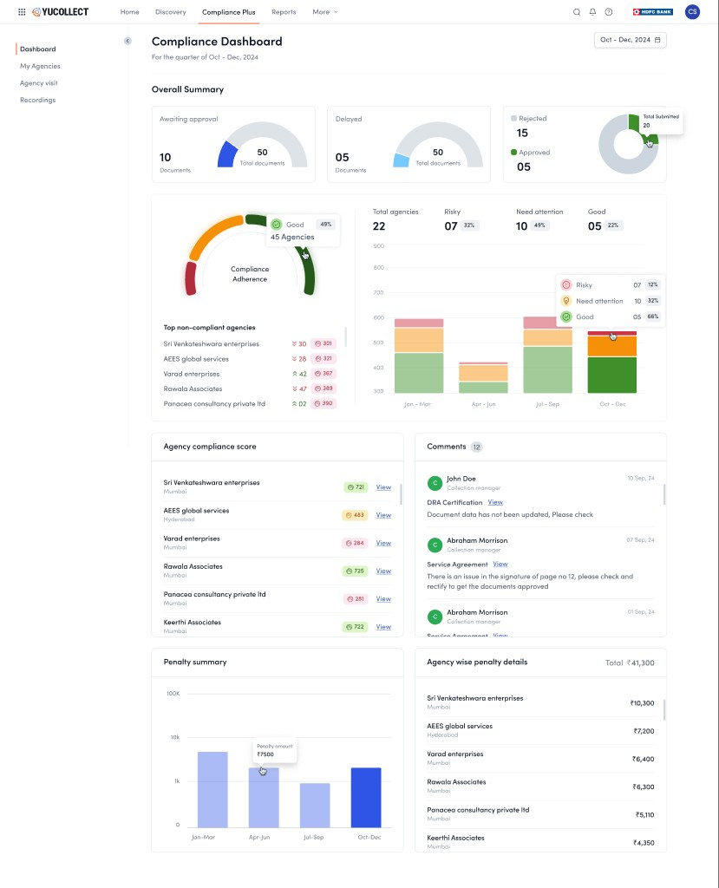
The lender's view: a whole portfolio of agencies ranked risky to good, one screen replacing twenty spreadsheets.
It shipped in the three weeks, and it landed: the launch bank partnership closed, compliance work moved out of Excel, email, and WhatsApp into one place, and even in-person agency visits now log into the same timeline as digital submissions, one auditable record for the regulator.
And one honest result, because real case studies have one: the assumption that a visible compliance score would motivate agencies through lender visibility did not work as expected. The score made compliance legible, and lenders use it daily to rank their agencies, but it did not on its own change agency submission behaviour. Motivation needed a stronger loop than a number, which is exactly the lesson the visual-reward onboarding was built on.
10 · Deep dive · The agent CRM
Where the marketplace becomes a phone call: the agent's working day, designed.
Everything above is infrastructure. This is where it lands: a tele-caller with a headset, a campaign of twenty-four thousand overdue accounts, and a target for the month. The CRM is the screen that agent lives in all day, and it was designed around one conviction: the agent should never have to decide who to call next, hunt for context mid-call, or describe what happened in free text. The system triages, briefs, and records. The agent talks.
The worklist opens pre-triaged into outcome buckets, paid, promise-to-pay, follow-ups, not contactable, each carrying its record count and outstanding value, with the campaign's collected-versus-remaining total always in view. The queue is the strategy: the agent works down a list that is already ordered by what matters, one tap from row to live call.
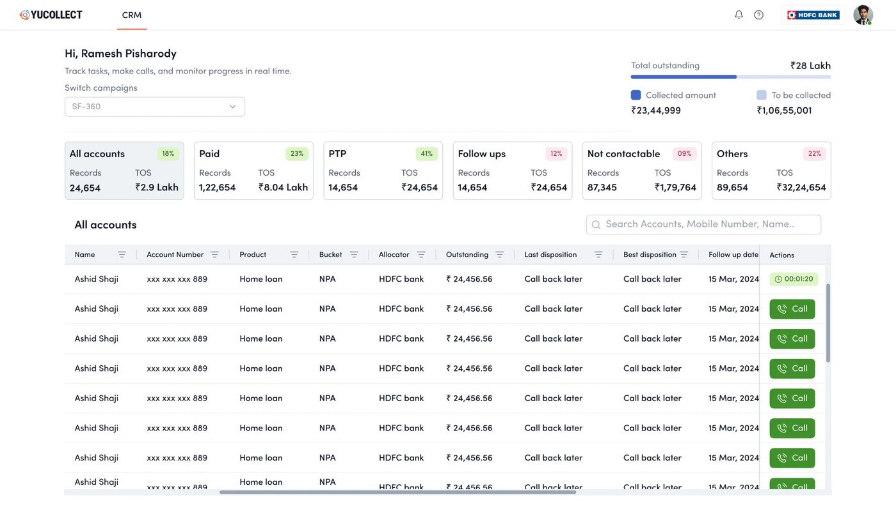
The agent's day, pre-triaged: outcome buckets with counts and value on top, and a call button on every row.
Tap a row and the borrower workspace assembles the entire relationship on one screen. The live-call header keeps in-call actions, WhatsApp, SMS, disposition, end, one reach away. Account financials, payment history, the last captured field location, and the best and last dispositions sit beside a full activity timeline: every call with its recording, every field visit with photo proof, every payment link sent, every supervisor reassignment of channel or agent. It is the platform's one-shared-record idea, zoomed all the way in to a single borrower.
The most consequential design decision is the smallest-looking one: no call ends without a structured disposition. The right rail offers a coded taxonomy, callback, not contactable, promise-to-pay, refuse-to-pay, with sub-dispositions, labels, and comments. That closing tap is what feeds everything upstream, the lender's channel-wise dashboards, the compliance trail, and eventually the propensity models of Version 2. The agent thinks they are wrapping up a call. They are actually writing the marketplace's ground truth.
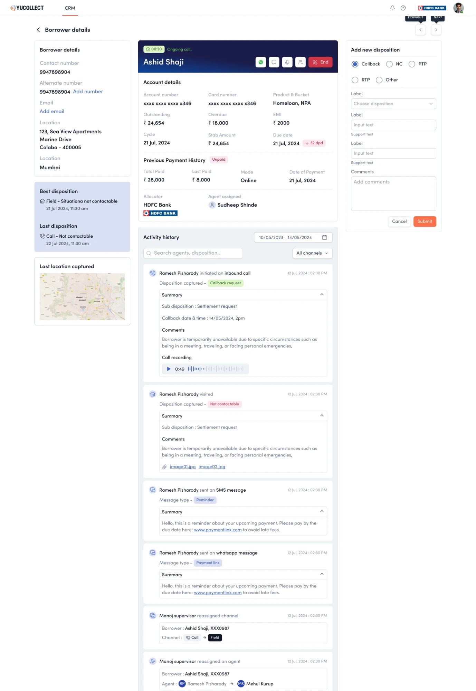
The live-call workspace: the whole relationship on one screen, timeline included, while the call runs.
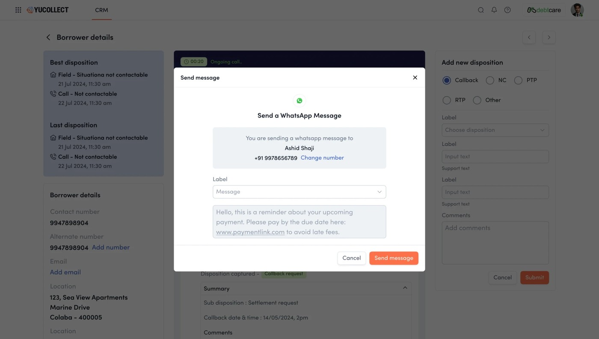
Multichannel without leaving the call: a templated WhatsApp payment link, sent mid-conversation.
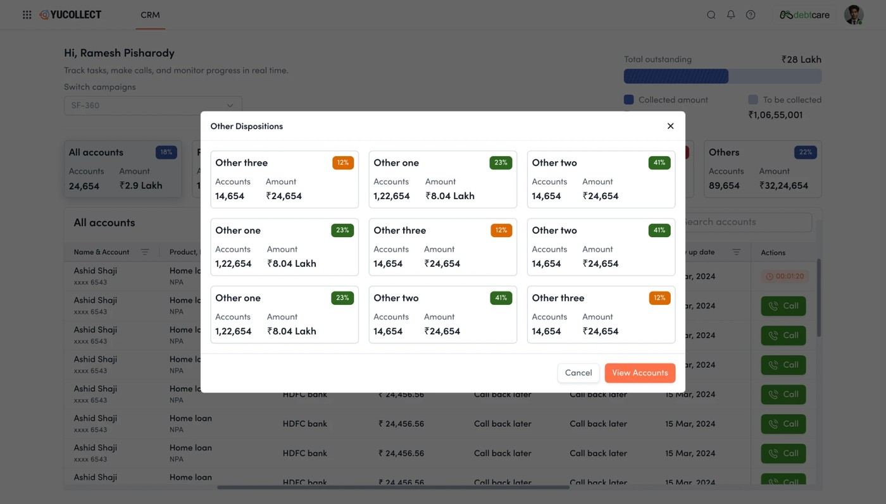
Dispositions are buckets with value attached, so outcomes roll straight up into the numbers lenders see.
The same discipline serves every cohort from section 03 at once. The agent gets a day that runs itself. The agency owner gets channel planning and reassignment, moving an account from call to field when the phone stops working. The lender gets dashboards built from coded outcomes instead of hearsay. And the borrower gets contact that is logged, recorded, and reviewable, which in this industry is the difference between recovery and harassment. One screen, four constituencies, no free text.
11 · Version 2 · The intelligence layer
Stop just routing collections. Start making them smarter and cheaper.
By Version 2 the marketplace worked and was trusted. The frontier moved from infrastructure to intelligence: recover more, from the right people, on the cheapest channel that works, and give agencies the fuel to grow. Four product lines pushed YuCollect from a place you run collections to a place that makes collections better.
01Predict Plus · propensity to payScoring that ranks who is most likely to pay, and routes each borrower into a risk-appropriate journey. This is the shift from calling everyone to calling the right person first, which is the single biggest lever on both recovery rate and cost.
02Digital Plus · the cheapest channel that worksMulti-channel outreach across SMS, IVR, WhatsApp, and email, so a self-curing borrower never needs a costly field visit. Designing the orchestration, which channel, in what order, with what fallback to a human, is where most of the 57% cost reduction is won.
03Contact Plus · reach, restoredAlternative contact discovery for borrowers who have gone dark. A large share of collection cost is simply the effort of reaching someone; surfacing a working number turns a dead account back into a conversation.
04Capital Plus · embedded financeShort-term working capital for agencies, inside the platform. Agencies are cash-flow constrained; financing their operations against the allocations they already hold lets them take on more, which deepens supply for the whole marketplace. Design as a growth flywheel, not just a feature.
The through-line across all three versions is that YuCollect grew the way infrastructure has to: liquidity first, then trust, then intelligence. Each layer was only buildable because the one under it existed. You cannot sell propensity scoring to a lender who does not trust the marketplace, and they will not trust a marketplace with no liquidity to trust.
12 · The operating model
Five parties, one transparent view of every transaction.
Underneath the versions is a single idea: put every party around one shared, transparent record of each allocation. The lender, the agency, the agent, and the compliance trail all read the same truth, so nobody has to reconcile five versions of what happened.
One transaction, one record, five parties reading the same truth. Transparency was not a feature bolted on. It was the product.
13 · Outcomes
A paper industry, now running on rails.
57%Reduction in collection cost
19,000+Pincodes with agency coverage
₹1.4L CrDebt volume on the parent marketplace
8Product lines shipped across three versions
The compounding is the point. Discovery created liquidity. Compliance and portfolio tooling turned that liquidity into trust, which is what unlocked large regulated lenders. Intelligence and digital channels then drove the cost of a recovery down by more than half. Each version was a different design problem, persuasion, then governance, then orchestration, but they add up to one thing: the collections layer of Indian credit, finally legible.
Headline figures are YuCollect and Yubi published results. Version-level sequencing reflects the product build as I led it.
14 · Reflections
You cannot design a marketplace. You can only sequence one.
The temptation is to draw the finished platform on day one. The craft is knowing what to refuse to build until the layer beneath it is real.
The lesson I carry from YuCollect is that in a multi-sided, regulated system, sequencing is the design. The eight-module platform was always visible on the roadmap, but shipping it in one go would have collapsed under its own cold-start. What worked was ruthless order: prove liquidity with the smallest possible marketplace, earn trust with compliance and visibility, then, and only then, layer on intelligence. Every screen mattered, but the decision that mattered most was what not to design yet.